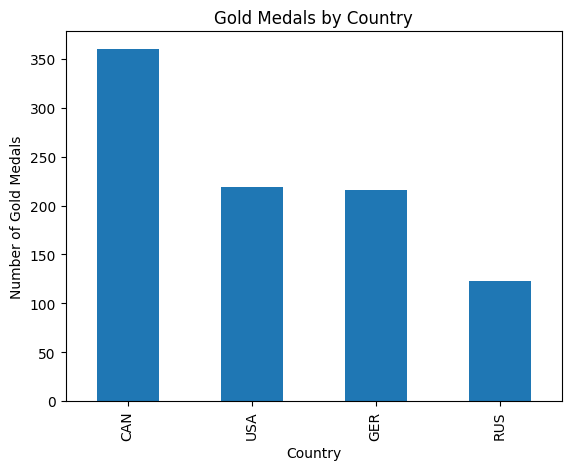
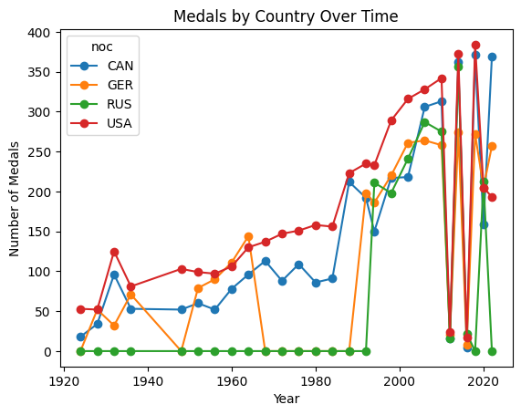
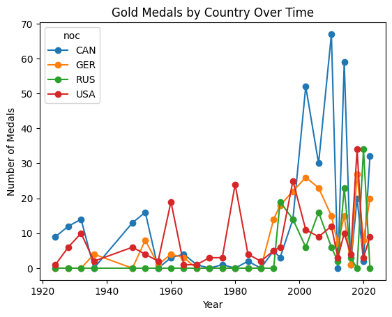

import pandas as pd
import geopandas as gpd
import matplotlib.pyplot as pltFigure Skating in the Winter Olympics:
### Specifically, the intersection between Medals and Countries
The Winter Olympics are a huge, momentous event, where every country gets to showcase their athletic abilities and national pride. Among the most successful nations in Winter Olympic history are USA, Russia, Canada, and Germany, each demonstrating distinct medal patterns and success rate over time. Below, here’s an analysis of the medal distributions between these countries. First, I’m going to analyze which country has the most Gold Medals:
wolympics_df = pd.read_csv('data/winter_olympics_medals.csv')gold = wolympics_df[wolympics_df["medal"] == "Gold"]countries = ["USA", "CAN", "GER", "RUS"]
gold_filtered = gold[gold["noc"].isin(countries)]gold_counts = gold_filtered["noc"].value_counts()
print(gold_counts)noc
CAN 360
USA 219
GER 216
RUS 123
Name: count, dtype: int64import matplotlib.pyplot as plt
gold_counts.plot(kind='bar')
plt.title("Gold Medals by Country")
plt.xlabel("Country")
plt.ylabel("Number of Gold Medals")
plt.show()
As seen from this graph, Canada takes the lead on gold medals, accounting for all events in the Winter Olympics, with a total of 360 medals. USA and Germany are next, with a total of 219 and 216, respectively. Russia comes in last with a count of 123. This accounts for gold medals in total, but wouldn’t it be interesting to see the amount of medals earned per year by each of these countries?
import matplotlib.pyplot as plt
countries = ["USA", "CAN", "GER", "RUS"]
medals_by_year = (
df[df["noc"].isin(countries)]
.groupby(["year", "noc"])
.size()
.unstack(fill_value=0)
)
medals_by_year.plot(marker="o")
plt.title("Medals by Country Over Time")
plt.xlabel("Year")
plt.ylabel("Number of Medals")
plt.show()
This chart shows clear differences in Winter Olympic medal performance among the United States, Canada, Germany, and Russia over time, with overall medal counts increasing significantly in recent decades. The United States consistently maintains the strongest performance, with steady growth from the early 20th century and particularly sharp increases after the 1980s. By the 2000s and 2010s, the U.S. reaches the highest medal totals among all four countries, reflecting its sustained investment in winter sports and broad athletic depth.
Canada also demonstrates strong upward momentum, especially beginning in the late 1980s, eventually approaching U.S. medal counts in the 2000s and 2010s. Germany shows consistent but more moderate performance, with gradual growth and periodic peaks, reflecting its long-standing strength in technical winter sports. Russia’s medal counts appear lower or absent in earlier years but rise significantly after the 1990s, likely reflecting political transitions from the Soviet Union to modern Russia and renewed national athletic investment. Overall, the chart illustrates both long-term growth in Winter Olympic participation and shifting global dominance, with the United States emerging as the most consistently dominant country while Canada and Russia show strong modern-era gains.
This chart encapsulates overall medals earned in Winter Olympic events, but what if we dived into Gold Medals earned by countries in the Winter Olympics?
import matplotlib.pyplot as plt
countries = ["USA", "CAN", "GER", "RUS"]
gold_by_year.plot(marker="o")
plt.title("Gold Medals by Country Over Time")
plt.xlabel("Year")
plt.ylabel("Number of Medals")
plt.show()
This chart shows the number of gold medals won over time by Canada, Germany, Russia, and the United States, highlighting more variability and sharper fluctuations compared to the total medal chart. While all four countries show relatively low and inconsistent gold medal counts in earlier Olympic years, there is a clear increase in gold medal success beginning in the 1990s and continuing into the 2000s and 2010s. Canada stands out with several dramatic peaks, including the highest single gold medal counts among all four countries, indicating periods of exceptional performance. The United States also shows steady gold medal success, though its peaks are generally lower than Canada’s. Germany maintains moderate but consistent gold medal wins, while Russia’s gold medal counts rise significantly in the modern era, reflecting its growing competitive strength.
This chart is similar to the previous analysis in that it confirms the overall upward trend in Olympic success for all four countries, especially after the late 20th century, and highlights the increasing competitiveness of Canada and Russia. However, it differs because gold medals alone reveal more volatility and highlight specific moments of peak dominance rather than overall consistency. Unlike the total medal chart, where the United States appeared most consistently dominant, this gold medal chart shows Canada achieving some of the highest individual peaks, suggesting that while the U.S. earns many medals overall, Canada has experienced periods of greater gold medal dominance specifically.